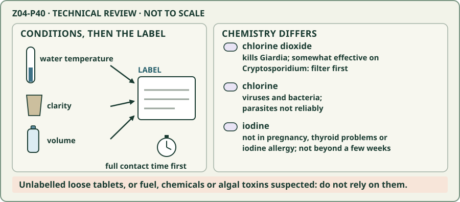

Z04-P40 · Water · New manuscript
Match chlorine dioxide and halogen tablets to temperature and contact time
Follow exact manufacturer dose, water-temperature and contact-time tables for portable chemical disinfection products.
When it applies · Backcountry travel using commercial chlorine dioxide tablets/drops, chlorine tablets or iodine products on chemically acceptable raw water.
Equipment · Unexpired commercial disinfectant in original labeled packaging, graduated container, pre-filter cloth and watch or timer.

Actions
- Read the product's active chemistry, expiration date and exact volume rating; chlorine dioxide, chlorine and iodine differ sharply in cyst coverage and wait times.[W05, W10, W20]
- Clarify turbid water first and extend contact time strictly according to the label when treating cold water or targeting resistant parasites like Cryptosporidium.[W05, W08, W20]
- Screen every group member before using iodine—avoid iodine-treated water during pregnancy, with thyroid conditions or with iodine hypersensitivity.[W10]
Failure recognition · Using a short summer wait time in near-freezing stream water, or using expired blister packs with discolored crumbled tablets.[W05, W10]
Verify · Record exact product, volume, water clarity, start time and label-required finish time before anyone drinks.[W05, ED]
Stop or change course · Do not guess doses from unlabeled loose tablets or use chemical disinfection to handle suspected fuel, chemical or algal-toxin contamination.[W01, W05, W15]
Evidence and editorial notes
- W01 · CDC · How to Make Water Safe in an Emergency (2024-09-19)
- Section: Water with fuel or toxic chemicals in it · Conditions: Suspected fuel, toxic chemicals or radioactive contamination
Support: Use a different safe supply. Standard boiling and microbial disinfection do not make this water safe.
Limitations: Does not list contaminant-specific lab remediation; applies to emergency consumer decisions only. · Conflicting evidence: None across CDC/EPA emergency guidance.
Editorial note: Used as upstream hard-stop gate prior to any field treatment card. · Specialist reviewer: Drinking-water safety and public health
Primary source · checked 2026-11-24 - W05 · CDC · How to Make Water Safe in an Emergency (2024-09-19)
- Section: Disinfect; Using light · Conditions: Matched product, concentration, dose, contact time and source condition
Support: Chemical disinfection is less dependable against some parasites. UV needs clear water and a correctly used device.
Limitations: Cold temperature and organic turbidity reduce chemical efficacy and UV penetration. · Conflicting evidence: None; exact manufacturer label governs dose and wait time.
Editorial note: Prohibits improvised chemical dosing when labels are absent. · Specialist reviewer: Drinking-water treatment specialist
Primary source · checked 2026-11-24 - W08 · CDC · How to Make Water Safe in an Emergency (2024-09-19)
- Section: Boil > Steps for boiling water > cloudy water · Conditions: Cloudy water with no identified chemical hazard
Support: Settling or cloth clarification only prepares water for treatment. Do not count it as disinfection.
Limitations: Removes coarse suspended solids only; dissolved toxins and microbes remain. · Conflicting evidence: Contradicts folklore claims that sand/cloth straining yields potable water; CDC governs.
Editorial note: Always depicted upstream of microbial treatment with an explicit barrier line. · Specialist reviewer: Drinking-water safety
Primary source · checked 2026-11-24 - W10 · CDC · Water Treatment Options When Hiking, Camping, or Traveling (current web edition)
- Section: Disinfect; Who should avoid water disinfected with iodine · Conditions: Backcountry water with acceptable chemical source; label-directed treatment
Support: Avoid iodine-treated drinking water during pregnancy, with thyroid problems or known iodine hypersensitivity. Chlorine and iodine are unreliable against some parasites.
Limitations: Not intended for prolonged multi-week use even in healthy adults; check product label. · Conflicting evidence: None; aligns with CDC backcountry guidance.
Editorial note: Mandates user medical screening before choosing iodine disinfection. · Specialist reviewer: Drinking-water safety and wilderness medicine
Primary source · checked 2026-11-24 - W15 · CDC · Harmful Algal Bloom (HAB)-Associated Illness (current web edition)
- Section: Harmful Algal Blooms > Drinking Water and Exposure · Conditions: Surface water with discolored scum, mats, foul odor, or active HAB advisory
Support: Avoid contact and do not drink water from suspected harmful algal blooms; boiling does not destroy cyanotoxins and can concentrate them as water evaporates.
Limitations: Cyanotoxins can persist in visually clear water after a bloom dissipates. · Conflicting evidence: Contradicts naive boil-everything advice; CDC/EPA HAB warnings explicitly prohibit boiling HAB water.
Editorial note: Establishes HABs as a chemical-toxin rejection trigger, not a microbial boil target. · Specialist reviewer: Environmental health and drinking-water safety
Primary source · checked 2026-11-24 - W20 · CDC · Preventing Cryptosporidium Infection (current web edition)
- Section: Preventing Cryptosporidium Infection > Water Treatment · Conditions: Surface water impacted by wildlife, livestock, or runoff
Support: Cryptosporidium oocysts are highly chlorine-tolerant; boiling or certified cyst-rated filtration (absolute <= 1 micron or NSF 53/55) is required rather than standard chlorine alone.
Limitations: Standard bleach or chlorine tablets at routine doses do not reliably inactivate Cryptosporidium. · Conflicting evidence: Clarifies gap left by single-barrier chlorine disinfection.
Editorial note: Core evidence for filter-plus-disinfect multi-barrier design in Z04. · Specialist reviewer: Drinking-water microbiology and public health
Primary source · checked 2026-11-24
Source lineage · CDC backcountry treatment; new manuscript · Classification · New manuscript.